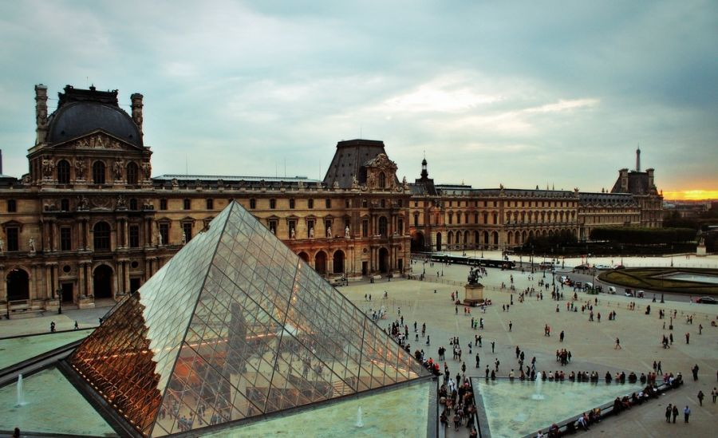

S
Dunyodagi eng mashhur muzey ma'lum qilindi
Dunyoda eng ko‘p tashrif buyuriladigan muzeylar reytingida Parijdagi Luvr birinchi o‘rinni egalladi. Bu haqda The Art Newspaper xabar qilmoqda.
Ta'kidlanishicha, 2018 yilda muzeyga o‘n milliondan ziyod mehmon tashrif buyurdi, uning mashhurligi 26 foizga oshdi.
Aniqlik kiritilishicha, bunga muzeyda qo‘shiqchilar Beyonse va Jay-Z’ning musiqiy klipi tasvirga olingani sabab bo‘lgan.
Shuningdek, kuchli beshlikka Pekindagi Xitoy Milliy muzeyi, Nyu-Yorkdagi Metropoliten-muzey, Vatikan muzeylari va Londondagi Teyt Zamonaviy galereyasi, kabi muzeylar kiritildi.


 Bu esa You Tube havolasi
Bu esa You Tube havolasi